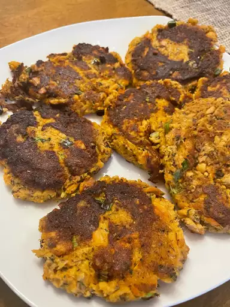

Back to Home Page
Scrumptious Salmon Cakes

Golden, crispy, and scrumptious salmon cakes
How to Make Salmon Cakes
You’ll find the full, step-by-step recipe below — but here’s a brief overview of what you can expect when you make homemade salmon cakes:
- Mix together salmon, panko, parsley, eggs, green onions, Worcestershire sauce, Parmesan cheese, Dijon mustard, creamy salad dressing, seafood seasoning, garlic powder, and pepper in a large bowl. Divide mixture and shape into 8 patties.
- Heat enough olive oil in a large skillet to cover the cooking surface over medium heat. Fry salmon patties in batches until browned, 5 to 7 minutes per side. Repeat with more olive oil as needed.